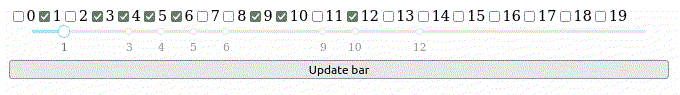
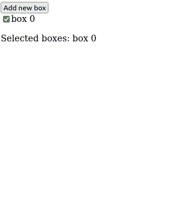

from dash import dcc, html, Input, Output, callback
from jupyter_dash import JupyterDash
from IPython.display import clear_output
app = JupyterDash(__name__)
options = list(range(0,20))
value = [1,5]
lst_val_to_slider_marks = lambda value: {val:str(val) for val in value}
app.layout = html.Div(
[
dcc.Checklist(
options,
value = value,
id = "check-lst",
inline = True
),
dcc.Slider(
min(options), max(options),
step = None,
marks = lst_val_to_slider_marks(value),
id = "slider"
)
],
style={'display': 'flex', 'flex-direction': 'column'}
)
@callback(
Output("slider", "marks"),
Input("check-lst", "value")
)
def my_callback(val:list) -> dict:
return lst_val_to_slider_marks(val)
if __name__ == '__main__':
app.run_server(debug=True, port=8051)
clear_output()Callbacks
It is a mechanism that allows you to create a function that will be called when you perform an action. It realised. This is implemented via the dash.callback decorator. More details in the documentation. I will focus on some practical features.
Sources
Input/output format
Input/Output, implemented by dash.Input/dash.Output, which should be passed as arguments to the callback decorator. Constructors of the classes require the following syntax ("<object-id>", "<property>"), so you can choose which property to pass to the callback and which to change.
In the following example, I simply take dcc.Checklist.values and link it to ddc.Slider.marks - the markers on the dcc.slider will exactly match the selected checkboxes on the dcc.checklist.
In site it will looks like:

Any check box you click - it will add one more marker on slider.
State callbacks
Any dash.dcc.Input will trigger the callback when the related item has changed. But sometimes it’s useful to have an element that sends its state, but only when some other element triggers the callback. Such purpose should be completed by dash.dcc.State.
So the following example is the same as in the Input/Output Format section, but it updates the slider not when the new checkbox is selected, but only when the button is pressed.
from dash import dcc, html, Input, Output, callback, State
from jupyter_dash import JupyterDash
from IPython.display import clear_output
app = JupyterDash(__name__)
options = list(range(0,20))
value = [1,5]
lst_val_to_slider_marks = lambda value: {val:str(val) for val in value}
app.layout = html.Div(
[
dcc.Checklist(
options,
value = value,
id = "check-lst",
inline = True
),
dcc.Slider(
min(options), max(options),
step = None,
marks = lst_val_to_slider_marks(value),
id = "slider"
),
html.Button(
"Update bar", id = "button"
)
],
style={'display': 'flex', 'flex-direction': 'column'}
)
@callback(
Output("slider", "marks"),
State("check-lst", "value"),
Input("button", "n_clicks")
)
def my_callback(val: list, n_clicks : int) -> dict:
'''
Callback for button.
Arguments
-----------
val : (list) value passed from check list by State
caontains camptions of selected boxes;
n_clicks : (int) n_clicks of button passed by Input;
Returns
-----------
(dict) which maps values and it's markers on slider.
'''
return lst_val_to_slider_marks(val)
app.run_server(debug=True)
clear_output()
Chained callbacks
This section is just a variant of that material. But better described.
This example shows how one event can trigger a chain of different callbacks.
- So we have a button that adds a new option to the checkbox list with a
button_clickcallback; - When something changes options in the checklist, it triggers
check_list_options_changed, which only sets the last option selected; - When something changes selected options,
check_list_values_changedwill be triggered and show selected options like line.
from dash import dcc, html, Input, Output, callback
from IPython.display import clear_output
from jupyter_dash import JupyterDash
app = JupyterDash(__name__)
app.layout = html.Div([
html.Button("Add new box", id = "add-button", n_clicks = 0),
dcc.Checklist(id="check-list"),
html.P(id="disp-sel-boxes")
])
@callback(
Output("check-list", "options"),
Input("add-button", "n_clicks")
)
def button_click(n_clicks):
'''
Callback makes in listbox exactly
number of boxes as the number of
button is clicked.
Arguments
------------
n_clicks : (int) count of clicks on button;
Returns
-----------
(list) captions of boxes which will
be displayed in check-list.
'''
return [f"box {i}" for i in range(n_clicks+1)]
@callback(
Output("check-list", "value"),
Input("check-list", "options")
)
def check_list_options_changed(options):
'''
Callback that will be called when the list of
of options in the checklist is updated. It sets
only the last option as a value.
Arguments
-----------
options : (list) list of available options.
Returns
-----------
(list) contains only the last option.
'''
return [options[-1]]
@callback(
Output("disp-sel-boxes", "children"),
Input("check-list", "value")
)
def check_list_values_changed(value):
'''
Called when you select/unselect a check.
Arguments
-----------
value : (list) captions of selected boxes;
Returns
-----------
(str) line that describes selected options
as "Selected boxes: <box1>, ..., <boxn>".
'''
return "Selected boxes: " + ", ".join([val for val in value])
app.run(debug=True)
clear_output()
Callback without output
It turns out that dash has no callback mechanism without output. So the only tricky way is to create a dummy object and set it as the output object. In the following example, I use html.Div(id='dummy'), or rather its children property. I also print out some messages with changes to dcc.Checklist to prove that everything is working.
You can find py file with the following example in “callbacks_examples/no_output_callback.py”.
from dash import dcc, html, Input, Output, callback, Dash
from IPython.display import clear_output
from jupyter_dash import JupyterDash
app = Dash(__name__)
check_values = ["value1", "value2", "value3"]
app.layout = html.Div([
html.Div(id='dummy'),
dcc.Checklist(
check_values,
id = "check-lst"
)
])
clicks_counter = 0
@callback(
Output("dummy", "children"),
Input("check-lst", "value")
)
def test_callback(checklist_value):
global clicks_counter
clicks_counter += 1
print("==========================")
print(f" CLICK {clicks_counter} ")
print("==========================")
print("-------value-------")
print(checklist_value)
return None
if __name__ == '__main__':
app.run_server(debug=False)
clear_output()